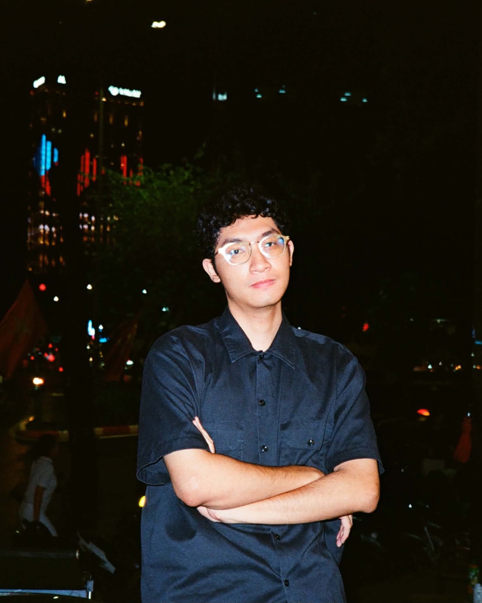
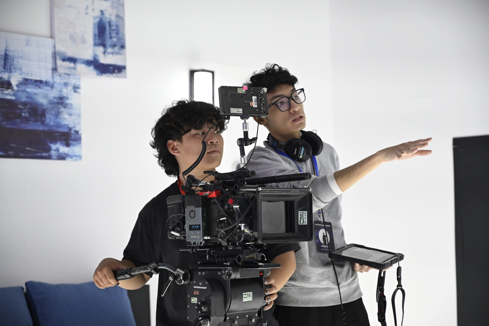
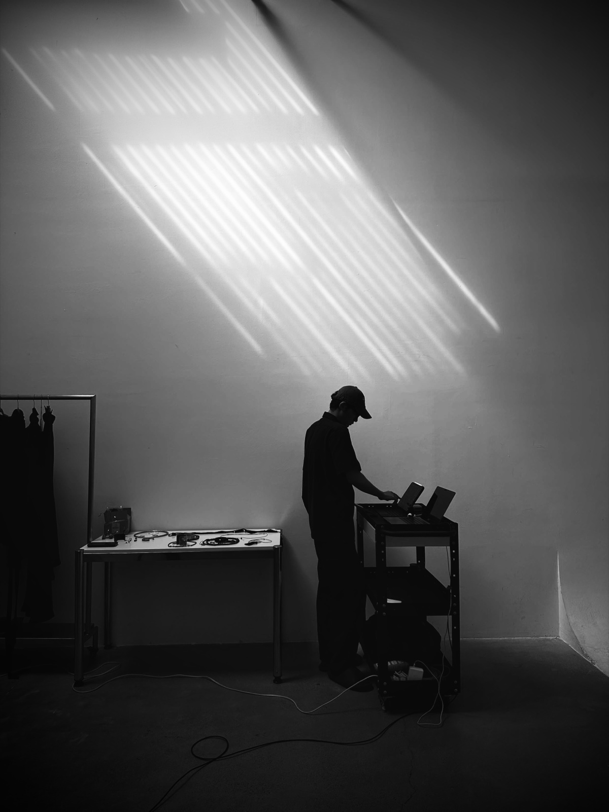

About Frank Le
I studied international relations in my first year, but my passion leads me to writing, photography, and filmmaking. My ambition is always to become a creative and film director, and one day I will have my films screened to audiences around the world.

I always want to learn more about the world's cultures and the constantly evolving industry of the arts to become a part of it. Following that ambition, in 2023, I moved to Canada in pursuit of a bachelor's degree in Global Business and Digital Arts at the University of Waterloo.
Since then, I have been producing, writing, and directing my own short films, as well as working with micro-level clients in the music and fashion industry. My interest now lies in the arts and the human condition in a society deeply integrated with AI and automation. My personal works explore our struggles and our psychology as the world learns to live with the technologies it keeps inventing — what we hold on to, and what we let go.
Open to work and collaboration. Let's sync up our wavelengths.
Curriculum vitae
Based in Waterloo, Ontario — originally Hanoi, Vietnam. Download PDF (2 MB)
Experience
- 2026 Writer-director, creative director Independent — Winter Cries as It Says Goodbye; commissions for MẢNH, Trang Phi Bridal and An Chinh × Su Ha
- Jun – Aug 2026 Information Security and Communications Intern (co-op) WinCommerce General Commercial Services JSC · Hanoi
- Sep 2025 – Apr 2026 Communications Assistant (co-op) Future Cities Institute founded by CAIVAN · Waterloo, ON
- Oct – Dec 2023 Marketing Executive University of Waterloo Vietnamese Students' Association · Waterloo, ON
- Jun – Oct 2022 Local Volunteer Centre for Sustainable Development Studies · Hanoi
Education
- 2023 – 2028 expected Bachelor of Global Business and Digital Arts University of Waterloo · GPA 3.54 / 4.00 · President's Scholarship
- 2022 – 2023 first year, not completed Bachelor of International Relations Diplomatic Academy of Vietnam · Hanoi
Skills
- Craft Directing, screenwriting, editing, creative direction, UI/UX design, videography, photography, content writing, social media
- Post DaVinci Resolve, Premiere Pro
- Design Figma, Photoshop, Illustrator, InDesign, Adobe Express, Canva, HTML/CSS
- Languages Vietnamese (native), English (proficient)

